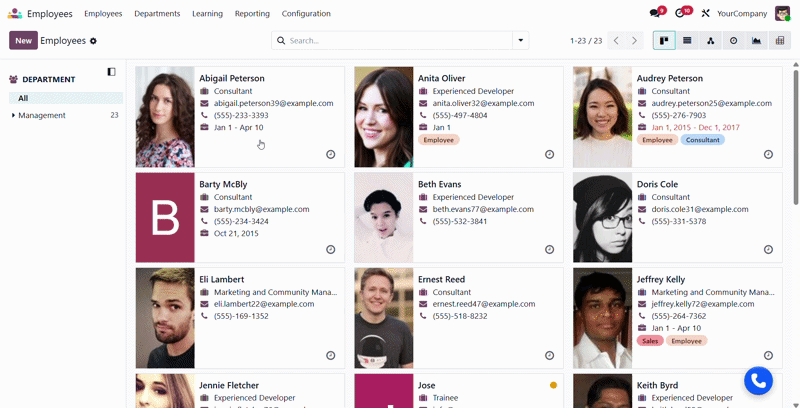

Bring Zoom Phone directly into your Odoo backend — make calls, send SMS, and auto-log every conversation without switching apps.
A complete integration layer — no tab switching, no copy-pasting numbers.

|
📲
Floating Phone Bubble
A persistent, draggable Zoom Phone dialer lives in the systray, accessible from every Odoo screen at all times.
|
⚡
One-click Dialing
Click any phone number field in a form view to instantly open and pre-fill the Zoom dialer without leaving the record.
|
💬
Zoom SMS
The SMS button on phone fields is patched to pre-fill the Zoom SMS composer with the recipient's number instantly.
|
|
📋
Auto Call Logging
When a call ends, a formatted log entry is automatically posted to the related record's chatter — no manual notes needed.
|
🎯
Auto Dial Toggle
Choose whether clicking a number places the call immediately or simply pre-fills the dialer so the user can confirm first.
|
🔔
In-app Notifications
Optional Odoo-native notification toasts surface call events (completed, missed, rejected) directly in the interface.
|
The module embeds Zoom Phone as an iframe widget and wires it into Odoo's phone fields and chatter.
When you click a phone number field on any Odoo record, the module intercepts the default browser dial action and routes it to the embedded Zoom Phone Smart Embed iframe in your systray bubble. The current record's model and ID are captured at that moment — so when the call ends, the call log is posted to the correct record's chatter automatically.
| ✅ Completed — John Smith called Alice Cooper on 17 Feb 2026, 10:42 AM |
| ❌ Missed — +1 555 0199 called Sales on 17 Feb 2026, 09:15 AM |
| 🚫 Rejected — Bob Miller called Support on 16 Feb 2026, 03:30 PM |
Configure Zoom's allowed origins, then flip a couple of toggles in Odoo Settings.
Developed & maintained by Softberry Tech
Odoo 19.0 · Version 19.0.1.0.0 · Category: Productivity / VOIP
🔒 License: OPL-1